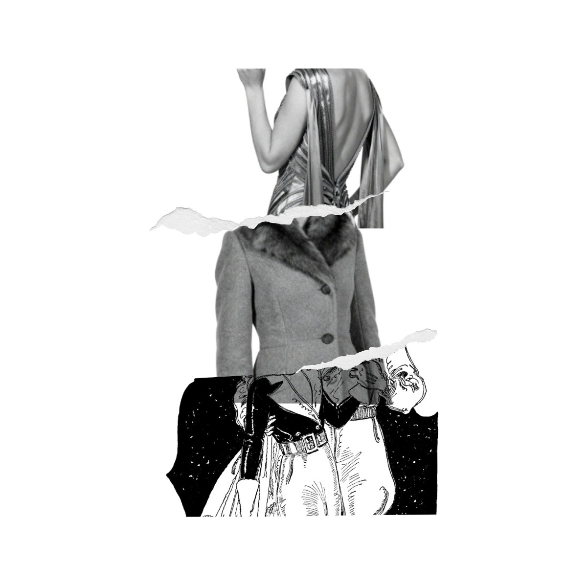
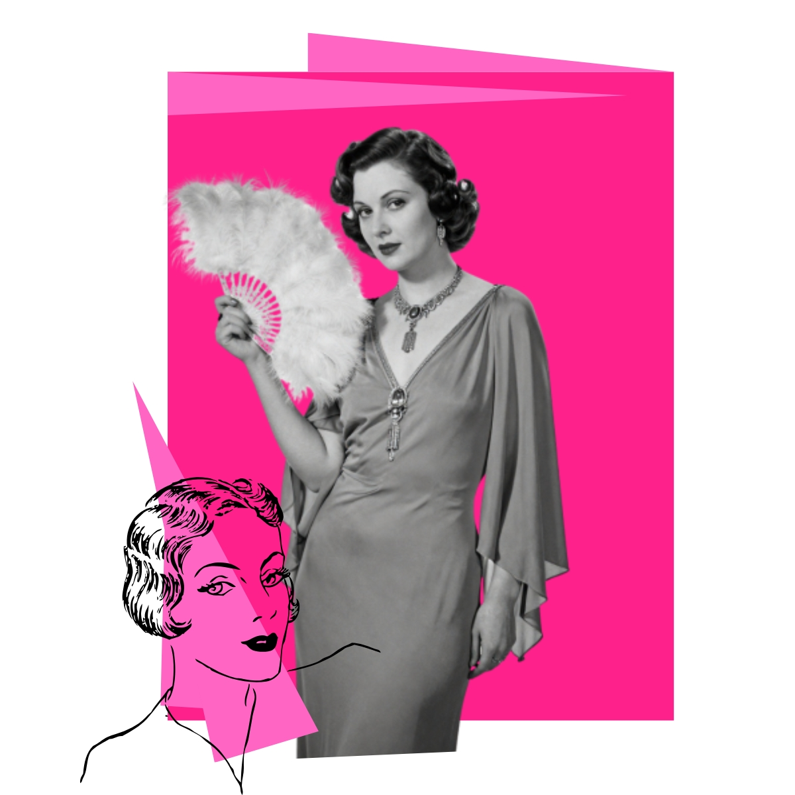

A moda dos anos 1930 foi marcada por silhuetas mais retas e elegantes, com destaque para os vestidos de linha reta e as mangas longas.
O estilo era caracterizado por linhas simples e elegantes, com foco na confortabilidade e na simplicidade.

As mulheres usavam vestidos com cintura marcada, saias longas e blusas de mangas compridas. Os tecidos eram geralmente leves e fluidos, como seda e chiffon.
Os homens usavam ternos de corte reto, com calças de cintura alta e gravatas finas. O estilo era mais formal e sóbrio, refletindo a época da Grande Depressão.

Em resumo, a moda dos anos 1930 refletia a busca por elegância e simplicidade, com roupas que valorizavam a silhueta feminina e masculina de forma discreta e sofisticada.